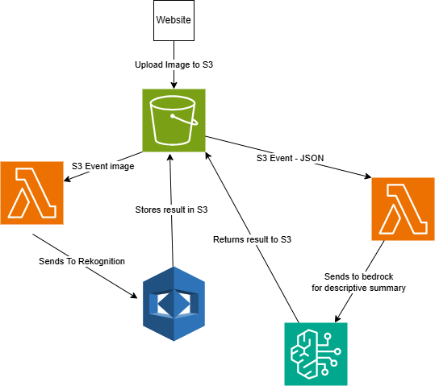

This application allows users to upload an image through a web interface, where it is processed in real time using a combination of AWS services:
1. Image Upload: A user uploads an image through the frontend (e.g., a website form), which stores the image in an Amazon S3 bucket.
2. Object Detection with Amazon Rekognition: The upload automatically triggers an AWS Lambda function that sends the image to Amazon Rekognition. Rekognition analyzes the image and returns a set of labels describing objects, scenes, or activities, along with confidence scores.
3. Human-Friendly Summary with Amazon Bedrock: The resulting label data is passed to another Lambda function, which uses Amazon Bedrock (e.g., Claude 3 via Anthropic) to generate a short, vivid description of the image — as if explaining it to someone who cannot see.
4. Accessible Output in HTML Format: The final output is saved as a readable HTML file in a separate S3 location (e.g., byarsportfolio/apps/Rekognize/), including the original image and a friendly AI-generated description.
✅ Key Technologies Used: • Amazon S3 – storage for uploaded images and generated descriptions
• Amazon Rekognition – image analysis (object and scene detection)
• Amazon Bedrock – AI summarization using foundation models
• AWS Lambda – serverless backend logic
• Python – logic to process and transform data
• HTML – user-facing output format
🔍 Use Cases
1. Accessibility Enhancements • Describe images for users who are visually impaired
• Add alternative text (“alt text”) to user-uploaded photos automatically
2. Content Moderation / Review
• Provide quick overviews of uploaded content for safety teams
• Flag certain objects or scenes for manual review
3. E-Commerce & Marketplaces
• Auto-generate product image descriptions for listings
• Enrich SEO by embedding human-like summaries of visual content
4. Education & Learning
• Describe historical, scientific, or geographic images for students
• Help children understand complex images with simpler descriptions
5. Digital Portfolios / Media Management
• Automatically generate image captions for artists, photographers, or journalists
• Tag and sort media libraries based on visual content
